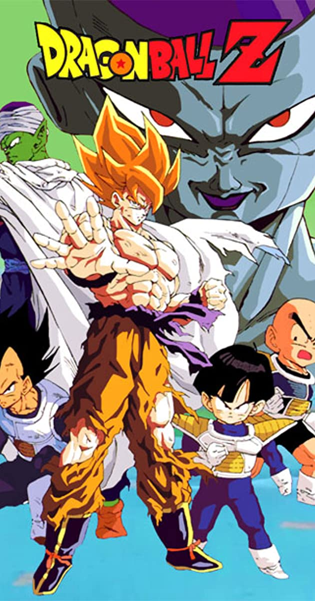
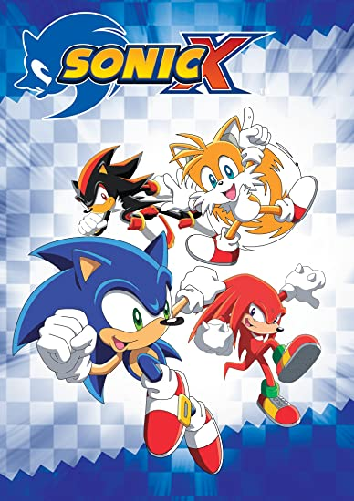

ANIME SHOWS
Anime sometimes called Japanimation, is hand-drawn and computer animation originating from Japan. The term anime is derived from the English word animation, and in Japan is used to refer to all forms of animated media. Outside Japan, the term refers specifically to animation from Japan or to a Japanese-disseminated animation style often characterized by colorful graphics, vibrant characters and fantastical themes.
Pokemon
Pokémon also known as Pocket Monsters in Japan, is a Japanese media franchise managed by the Pokémon Company, a company founded and with shares divided between Nintendo, Game Freak, and Creatures. The franchise copyright and Japanese trademark is shared by all three companies, but Nintendo is the sole owner of the trademark in other countries.

Dragon Ball Z
Dragon Ball Z is a Japanese anime television series produced by Toei Animation. It was broadcast in at least 81 countries worldwide. It is part of the Dragon Ball media franchise. Dragon Ball Z continues the adventures of Goku, who, along with his companions, defend the Earth against villains ranging from aliens (Frieza), androids (Cell) and magical creatures (Majin Buu). While the original Dragon Ball anime followed Goku from childhood to early adulthood, Dragon Ball Z is a continuation of his adult life, but at the same time parallels the life of his son, Gohan, as well as the development of his rival Vegeta.
Sonic X
Sonic X is a Japanese anime television series based on Sega's Sonic the Hedgehog video game series.
The series follows a group of anthropomorphic animals who accidentally teleport from their home planet to Earth after attempting to save one of their friends from their enemy Doctor Eggman. Separated, Sonic the Hedgehog is saved by a human boy named Chris Thorndyke.
Death Note
Death Note is a Japanese manga series written by Tsugumi Ohba and illustrated by Takeshi Obata. The story follows Light Yagami, a teen genius who stumbles across a mysterious otherworldly notebook: the "Death Note", which belonged to the Shinigami Ryuk, and grants the user the supernatural ability to kill anyone whose name is written in its pages.

Other Anime Shows
There are many other Anime Shows. Here are a few you may be familiar with:
- Code Geass
- Bleach
- Yuri on Ice
- Naruto
- One Piece